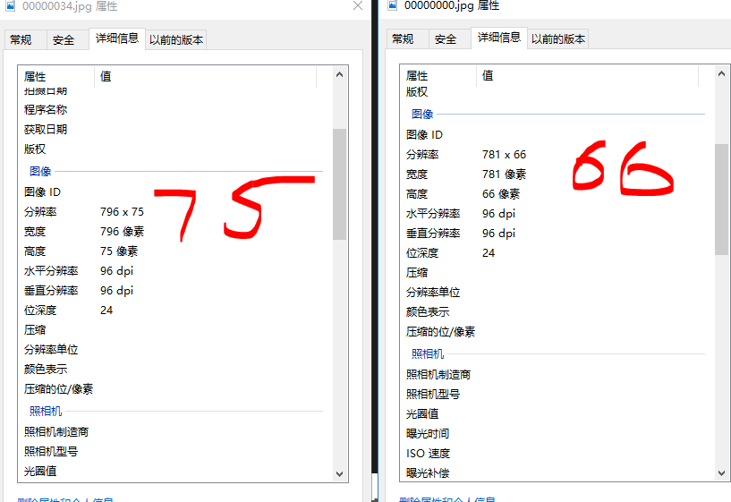
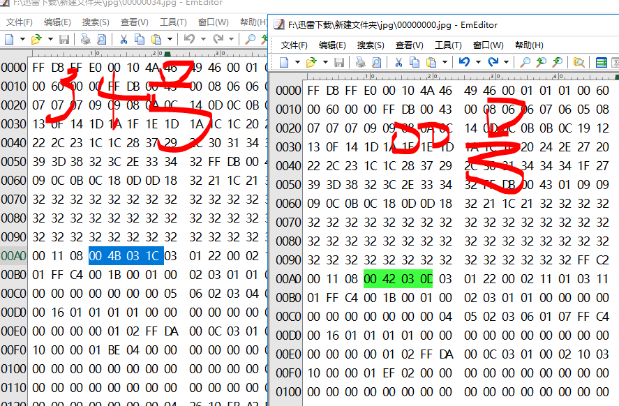

论剑
论剑
100
剑客
十年磨一剑，霜刃未曾试。 今日把示君，谁有不平事。

1.binwalk分离文件
先是使用Stegsolve 无果
binwalk 发现有两张图片，自带命令不能分离文件
这里使用foremost foremost lunjian.jpg
得到 00000000.jpg 00000034.jpg
使用Photoshop打开第一张图片报错，推测第一张图片有问题
两张图片详细信息对比

分辨率有问题
2.winhex 分析
参考 jpg 格式举例详解

设置宽高一样，右下角右端倪

于是不断调宽高，将42设置为92后得到

3.回过头来观察 原始文件
继续分析半天后，原始文件 看到一串01字符串且前面刚好有个f
01101101 01111001 01101110 01100001 01101101 01100101 01101001 01110011 01101011 01100101 01111001 00100001 00100001 00100001 01101000 01101000 01101000
转成ASCII为mynameiskey!!!hhh
emmm，放弃无思路